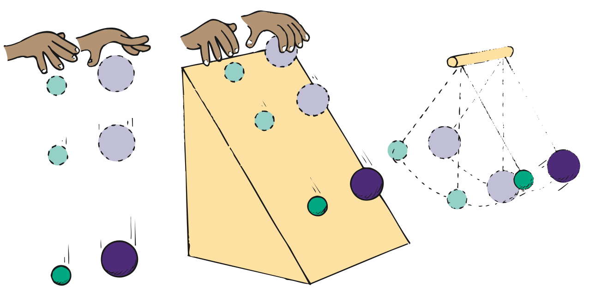

Chapter Opener
The Chapter 19 opener portrait of Frank Oppenheimer was omitted because no matching captured image was supplied.
The Exploratorium in San Francisco is not only a world-class museum of science and technology; it is also perhaps the best place on planet Earth to teach a physics class. I was honored to do so in the years 1982-2000. The Exploratorium is special because of its founder, Frank Oppenheimer, the younger brother of more famous J. Robert Oppenheimer, the director of the Los Alamos lab during World War II. Frank’s passion for doing physics was surpassed only by his passion for teaching it. I was enormously privileged to share my classroom with him when vibrations, waves, and musical sounds were the topic. I remember after one of his brilliant presentations he quietly asked me how he did. Almost tearfully, I responded, “You were great.” For it was true. In addition to his great explanations of physics, he himself exuded a personal greatness—with his insistence on excellence, lack of pretentiousness, and respect for invention and play and for his students. Frank was the most-loved teacher in my experience.
Frank Oppenheimer suffered in the political witch hunts of the 1950s when he admitted to being a member of the American Communist Party back in the depths of the Great Depression, along with many other idealistic citizens who were sensitive to the nation’s high unemployment rate at the time. Frank told me that after he refused to give the names of other members to the House Un-American Activities Committee, he was hounded by the FBI. Despite his impressive accomplishments in physics, and despite international awards in physics, Frank was barred from practicing physics. He was, however, allowed to be a cattle farmer and teach general science at Pagosa Springs High School in Colorado. Frank went on to say that, adding insult to injury, his neighbors were warned by government agents to keep a wary eye on his potential “un-American activities.”
Frank devoted the rest of his life to exposing the general public to the wonders of science, which culminated in the Exploratorium in San Francisco. I dedicated the 5th edition of my Conceptual Physics to him. Before Frank died in 1985, he contributed this paragraph, which I used as the book’s opening paragraph:
By trying to understand the natural world around us, we gain confidence in our ability to determine whom to trust and what to believe about other matters as well. Without this confidence, our decisions about social, political, and economic matters are inevitably based entirely on the most appealing lie that someone else dishes out to us. Our appreciation of the noticings and discoveries of both scientists and artists therefore serves, not only to delight us, but also to help us make more satisfactory and valid decisions and to find better solutions for our individual and societal problems.
Frank’s main motive for founding the Exploratorium was to lift people by encouraging them to do for themselves and to think for themselves—a way of teaching that is now widespread. In 2013 the Exploratorium moved from the Palace of Fine Arts in San Francisco to nearby Pier 15. I’m happy to report that the new and larger Exploratorium has all the charm and good energy that Frank gave to the original Exploratorium.
Good Vibrations
In a general sense, anything that moves back and forth, to and fro, side to side, in and out, or up and down is vibrating. A vibration is a periodic wiggle in time. A periodic wiggle in both space and time is a wave. A wave extends from one place to another. Light and sound are both vibrations that propagate through space as waves—but two very different kinds of waves. Sound is a mechanical wave, the propagation of vibrations through a material medium—a solid, liquid, or gas. If there is no material medium to vibrate, then no sound is possible. Sound cannot travel in a vacuum. But light can because, as we shall learn in later chapters, light is a vibration of electric and magnetic fields—an electromagnetic wave of pure energy. Although light can pass through many materials, it needs none. This is evident when it propagates through the vacuum between the Sun and Earth. The source of all waves—mechanical or electromagnetic—is something that is vibrating. We shall begin our study of vibrations and waves by considering the motion of a simple pendulum.
Vibration of a Pendulum
If we suspend a stone at the end of a piece of string, we have a simple pendulum. Likewise for a sand-filled container suspended at the end of a vertical pole that swings to and fro. In the chapter-opening photos, Frank Oppenheimer shows how sand leaking from such a pendulum traces a straight line on a stationary conveyor belt and then, when the belt moves at constant speed, produces a special curve known as a sine curve. A sine curve is a pictorial representation of a wave produced by simple harmonic motion.1
Pendulums swing to and fro with such regularity that, for a long time, they were used to control the motion of most clocks. They can still be found in grandfather clocks and cuckoo clocks. Galileo discovered that the time a pendulum takes to swing to and fro through small distances depends on only the length of the pendulum.2 The time of a to-and-fro swing, called the period, does not depend on either the mass of the pendulum or the size of the arc through which it swings.

A long pendulum has a longer period than a short pendulum; that is, it swings to and fro less frequently than a short pendulum. A grandfather clock’s pendulum with a length of about 1 meter, for example, swings with a leisurely period of 2 seconds, while the much shorter pendulum of a cuckoo clock swings with a period that is less than a second. In addition to length, the period of a pendulum depends on the acceleration due to gravity. Oil and mineral prospectors use very sensitive pendulums to detect slight differences in this acceleration, which is affected by the densities of underlying formations.
1 The condition for simple harmonic motion is that the restoring force is proportional to the displacement from equilibrium. This condition is met, at least approximately, for most vibrations. The component of weight that restores a displaced pendulum to its equilibrium position is directly proportional to the pendulum’s displacement (for small angles)—likewise for a bob attached to a spring. Recall, from Chapter 12, that Hooke’s law for a spring is F = kΔx, where the force to stretch (or compress) a spring is directly proportional to the distance stretched (or compressed).
2 The equation for the period of a simple pendulum for small arcs is T = 2π√(L/g), where T is the period, L is the length of the pendulum, and g is the acceleration due to gravity.